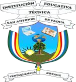
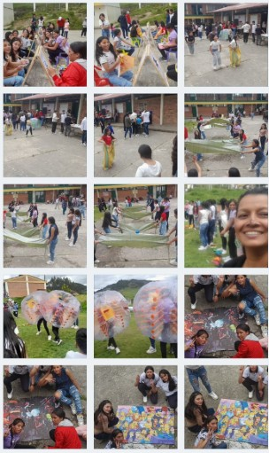
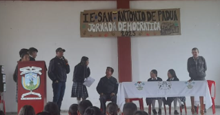
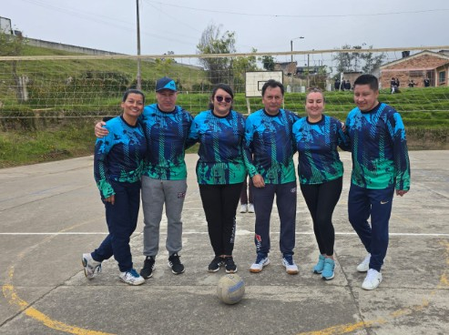
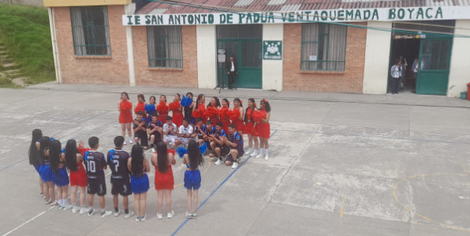

Periódico digital - Colegio San Antonio de Padua · Ventaquemada, Boyacá

Edición: El Informativo Paduino · Colegio San Antonio de Padua
Bienvenidos a la edición digital. Destacamos el día de la Boyacensidad
y más noticias de nuestra comunidad.
Por Redacción · Ventaquemada
Una edición que celebra nuestras voces y nuestra identidad
El Informativo Paduino presenta una nueva edición digital construida desde la creatividad, la participación y el sentido de pertenencia. En estas páginas encontrarán los proyectos que reflejan el talento de nuestros estudiantes, los eventos que fortalecen nuestra identidad boyacense y las iniciativas que hacen grande a nuestra comunidad educativa.
Editorial
Por: Rosibel Suárez Reyes
Docente de lengua castellana
Apreciada comunidad educativa de la Institución San Antonio de Padua se inicia una
nueva forma de dar a conocer la expresión y la participación a través de la palabra
escrita...
La creación artística como expresión de lenguaje. La asignatura de Lengua Castellana,
más allá de enfocarse únicamente en la gramática, la ortografía y la comprensión
lectora, también busca fortalecer la capacidad de los estudiantes
Por: Carlos Hernández
Docente de Educación física.
Informe sobre el Campeonato de Voleibol: El presente informe tiene como objetivo dar
a conocer el desarrollo del campeonato de voleibol en la Institución San Antonio de
Padua .
Apreciada comunidad educativa de la Institución San Antonio de Padua:
Se inicia una nueva forma de dar a conocer la expresión y la participación a través de la palabra
escrita. Con gran satisfacción se presenta la primera edición digital del Periódico Escolar
Informativo Paduino, una idea que nace del deseo de compartir nuestras voces, nuestras ideas y
los acontecimientos que dan vida a nuestra Institución.
Este periódico no solo es un medio informativo: es un espacio donde la palabra se transforma en
puente, donde cada integrante de la comunidad educativa puede construir, crear y plasmar sus
ideas. Es la oportunidad de descubrir talentos, de fortalecer la lectura y la escritura, y de
exponer cada idea a través de la imaginación, la autenticidad y los acontecimientos propios de
una comunidad educativa.
No solo es el lanzamiento de un medio escolar, sino el nacimiento de una comunidad que escribe su
propia historia. Cada artículo, cada fotografía, cada opinión y cada noticia será un reflejo de
quienes somos: una institución comprometida con la formación integral, con la creatividad y con
la búsqueda constante del aprendizaje.
Invitamos a toda la comunidad a abrir este periódico con curiosidad y orgullo. Que cada página
nos anime a pensar, a cuestionar, a soñar y a reconocer que la educación también se construye
con palabras que inspiran y que nos unen.
A nuestros estudiantes redactores, fotógrafos, ilustradores y colaboradores: gracias por asumir
este reto con entusiasmo y responsabilidad. A los docentes que acompañan este proceso, gracias
por creer en el poder de la expresión. A las familias, gracias por motivar y apoyar cada
iniciativa.
El Informativo Paduino comienza un camino, y cada uno de nosotros será parte
esencial de su crecimiento. Que esta primera edición sea el inicio de muchas más. Que las letras
nos sigan guiando, que las ideas nos sigan moviendo y que este periódico se convierta en un
símbolo del espíritu: solidario, creativo, crítico y lleno de esperanza.
¡Sean todos bienvenidos a este nuevo capítulo!
¡Aquí empieza la historia escrita por nosotros y para nosotros!
Noticias
Entrega del parque infantil
Junio de 2025 · Ventaquemada
Este año se celebra con gratitud la entrega del parque infantil, un espacio necesario
para el esparcimiento de los niños y niñas más pequeños. Se resalta la gestión del
señor rector Hugo Armando Granados, gracias por ello.
Día del estudiante
Junio de 2025 · Ventaquemada
Se llevo a acabo el día del estudiante donde se unieron todas las sedes de nuestra
Institución, fue un evento de compartir, de risas, competencias y sobre todo de alegría
para cada estudiante que disfrutaron este momento.

Síntesis Jornada Democrática
Por: Alfonso Fonseca
Docente de Sociales
Encuentro Municipal de Personeros y Contralores Estudiantiles.
Durante esta jornada, realizada el 20 de febrero, se eligieron las estudiantes de grado
once para los cargos de personera y contralora. Las alumnas Kasandra Pérez y
Alexandra Pedraza fueron elegidas respectivamente.
La actividad fue apoyada por los estudiantes de grado décimo, quienes sirvieron como
jurados demostrando responsabilidad y compromiso. Se observó honestidad en las
candidatas y transparencia en el proceso electoral.
En el desarrollo de sus planes de trabajo se evidenció la responsabilidad en la ejecución
de actividades como el Día del Idioma, campañas de ecología, Día del Docente, Amor y
Amistad, Día del Niño y su participación en los Centros Juveniles promovidos por la
Alcaldía y la Personería Municipal. Se destaca su esfuerzo y dedicación.

Encuentro Municipal de Personeros y Contralores Estudiantiles.
Síntesis del Encuentro de Personeros y Contralores
Encuentro Municipal de Personeros y Contralores Estudiantiles.
Este evento se llevó a cabo el 11 de septiembre con la participación de varias Instituciones
Educativas del municipio de Ventaquemada: Francisco de Paula, Colegio Panamericano,
Puente de Piedra, Manuel Antonio Flores y la Institución San Antonio de Padua.
Contó con la presencia del personero municipal Edison Romero, el contralor departamental,
la doctora Yamile Muñoz, representantes de juventudes, directivos, docentes y estudiantes
de grados décimo y once.
Encuentro Municipal de Personeros y Contralores Estudiantiles.
Se trabajaron temas relacionados con liderazgo estudiantil, mecanismos de participación,
derechos y deberes, convivencia, manual de convivencia y problemáticas actuales de las
instituciones educativas. Posteriormente se desarrolló una plenaria con los personeros y
contralores estudiantiles.
Síntesis Día de la Boyacensidad
Celebración del Día de la Boyacensidad.
El 2 de octubre se celebró el Día de la Boyacensidad, resaltando los valores culturales y
artísticos de nuestro departamento: danza, gastronomía, geografía e historia.
Hubo una masiva participación de estudiantes desde jardín hasta grado once. La jornada
inició con una izada de bandera, exaltando a los estudiantes destacados por su valor de
identidad.
Se realizó también un acto cultural y una integración de los grados once. Se destacó el
compromiso de los estudiantes, apoyados por sus directores de grado. La actividad fue
coordinada por los docentes Jhonana Forero y Alfonso Fonseca.
La creación artística como lenguaje: estudiantes de noveno presentan pinturas inspiradas en
la lectura
Cultura | Edición 2024 – 2025
La asignatura de Lengua Castellana, más allá de enfocarse únicamente en la gramática, la
ortografía y la comprensión lectora, también busca fortalecer la capacidad de los
estudiantes para interpretar, expresar y comunicar ideas de manera creativa. Bajo esta
perspectiva, los estudiantes de grado noveno de 2024 y 2025 han desarrollad elaboración
de pinturas que integró la sensibilidad artística con los procesos de lectura y
escritura. El propósito central de esta actividad fue demostrar que el lenguaje no se
limita solo a la palabra escrita o hablada, sino que también puede manifestarse por
medio de imágenes, símbolos y colores. Cada pintura elaborada por los estudiantes se
convirtió en un texto visual cargado de significados, emociones y reflexiones
personales.
Durante el proceso, se fomentó la interpretación crítica. Los estudiantes debían
identificar las ideas principales de los textos seleccionados, reconocer las emociones
predominantes y comprender el mensaje implícito de su propia inspiración.
Posteriormente, transformaron esa interpretación en una pintura que representara
visualmente su lectura. Este ejercicio permitió fortalecer la competencia comunicativa,
pues los estudiantes aprendieron a traducir palabras en imágenes, a argumentar sus
decisiones creativas y a explicar la relación entre la pintura y el texto literario.
La actividad también promovió el trabajo autónomo y la responsabilidad. Los estudiantes
eligieron sus materiales, bocetaron sus ideas y experimentaron con técnicas como el
acrílico, la témpera o el collage. Al finalizar sus obras, cada uno elaboró la
descripción donde explicaba el mensaje de la pintura, justificaba los colores utilizados
y detallaba la intención comunicativa detrás de cada elemento visual.
Además, el proyecto favoreció el desarrollo de la sensibilidad artística, una habilidad
fundamental en la formación integral del estudiante. Las pinturas evidenciaron
diversidad de estilos: algunos optaron por representar paisajes que reflejaban calma y
esperanza, mientras que otros plasmaron figuras humanas que expresaban emociones como la
tristeza, la alegría o la sorpresa. Hubo también quienes se inclinaron por composiciones
abstractas, donde los colores y las formas hablaban por sí mismas. Finalmente, permitió
que los estudiantes reconocieran el arte como una forma legítima de comunicación. En la
exposición final, cada pintura fue acompañada por la explicación oral de su autor, lo
que fortaleció la competencia argumentativa. Este espacio de socialización no solo les
permitió compartir sus ideas, sino también valorar el talento y la interpretación de sus
compañeros. En conclusión, la elaboración de pinturas en la asignatura se convirtió en
una oportunidad para integrar la lectura, la escritura y la expresión artística.
Campeonato de Voleibol
Por: Carlos Hernández
Docente de Educación física.
Informe sobre el Campeonato de Voleibol: El presente informe tiene como
objetivo dar a conocer el desarrollo del campeonato de voleibol en la Institución San
Antonio de Padua, realizado durante finales del tercer e inicios del cuarto período.
Se contó con la asesoría del profesor Carlos Hernández, docente de Educación Física, y la
organización logística por parte de estudiantes de los grados 9, 10 y 11, quienes
colaboraron en aspectos como arbitraje, manejo de atril, balón y mallas. Este evento
deportivo buscó fomentar la integración, el trabajo en equipo y la práctica del deporte
entre estudiantes y algunos directivos.

Campeonato institucional de voleibol — Cancha central.
El campeonato contó con la participación de 10 equipos, conformados por ocho
integrantes cada uno. Se dividió en dos categorías: Juvenil (grados 9, 10, 11 y
docentes) y
Prejuvenil (grados 6, 7 y 8). Los partidos se realizaron en la cancha central
de la
institución bajo la organización de Yeimy Alexandra Pedraza, contralora
estudiantil, y
Paula Alejandra Bustos de grado 11.
El equipo campeón en la categoría Juvenil fue Spartans, mientras que en la
categoría
Prejuvenil el título fue para El Tapazo. También se entregaron reconocimientos
individuales a los jugadores destacados de ambos equipos, valorando su esfuerzo,
colaboración y desempeño dentro de la cancha.
Uso de Tablets en los Procesos de Lectura
Estudiantes de grado décimo durante las actividades de lectura con tablets.
Las tablets se han convertido en un recurso para fortalecer los procesos de lectura
en grado décimo. A través de ellas, los estudiantes pueden acceder a libros digitales,
artículos, enciclopedias y recursos interactivos que enriquecen su comprensión.
Además, permiten ampliar el vocabulario, investigar con mayor facilidad y desarrollar
habilidades tecnológicas esenciales. Su uso responsable favorece una lectura más dinámica,
motivadora y acorde con las necesidades educativas actuales.
Esta iniciativa parte de que la Institución cuenta con más de 50 tablets para que los
estudiantes exploren y experimenten. Finalmente, se analiza si esta herramienta es viable
para continuar implementándola en los años venideros en otros grados.
EL ANIME MÁS QUE DIBUJOS
Por: Oscar Bernal
Estudiante grado 8°
Aunque muchos aún creen que el anime es ''solo para niños", millones de personas en todo el mundo
saben que es mucho más; es una forma de arte que transmite emociones profundas y habla de temas
complejos como el amor, la perdida, la superación y el sentido de la vida.
Series como Naruto, Attac on Titan o Your name, han marcado a generaciones, en cada historia hay
un mensaje, un personaje con el que uno puede identificarse. Muchos jóvenes encuentran refugio
en esos mundos, donde los protagonistas también sufren, luchan y crecen. El anime no solo se ve,
se vive. Crea comunidades, inspira arte, enseña valores y conecta a personas de distintas
culturas. Ya no es raro, ver a alguien con una mochila de Demon Slayer o escuchando un opening
japones en sus audífonos. El anime ha dejado de ser "raro" para convertirse en parte de la
identidad de esta generación.
Muchos animes también enseñan lecciones de vida. A través de sus personajes, aprendemos a nunca
rendirnos, a valorar la amistad y a seguir adelante a pesar de la dificultad. Por eso, el anime
no solo entretiene si no que inspira.
Datos Curiosos
🎓
Despedida Grado Décimo
Como tradición en esta ocasión, se llevó a cabo con una revista rítmica en homenaje a sus compañeros de grado undécimo por parte de grado décimo.
¡Espectacular!

📚
Participación Día del Idioma
Algunos estudiantes participaron en la convocatoria de la alcaldía municipal a este evento, ganadores en deletreo y oralidad recibieron premios económicos.